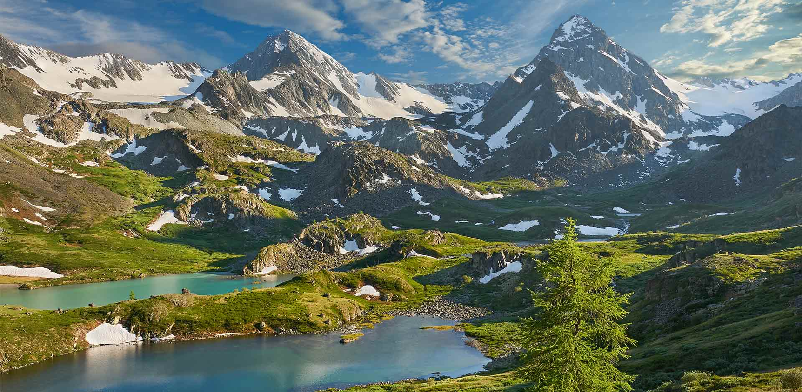

Bayan-Ulgii is a far-off land of high mountains (the Mongol Altai - Tavan Bogd mountains with 4,373 m peak) torrents and glaciers, inhabited by Kazakh, a minority who has a different culture from the Mongols, herding yaks and goats and hunting with trained eagles. Bayan-Ulgii aimag is situated in the extreme West of Mongolia, on the West and North it borders with the Russian Federation and on the South-West with the People's Republic of China. The ethnic groups who call Bayan-Olgii home are comprised of the Kazakh, Khalkh. Durvud, Uriankhai and Tuva. Unlike the rest of Mongolia, which is dominated by the Khalkh Mongols. About 90% of Bayan-Ulgii's population are Kazakh, almost all of them Muslim. The remaining 10% are mostly obscure minority groups. Many people in the aimag speak Kazakh, so if you have spent time perfecting some conversational Mongolian, you may be devastated because many Kazakhs won't be able to understand you. There is bound to be someone nearby, however, who speaks Mongolian and, possibly Russian, but certainly nothing else.
